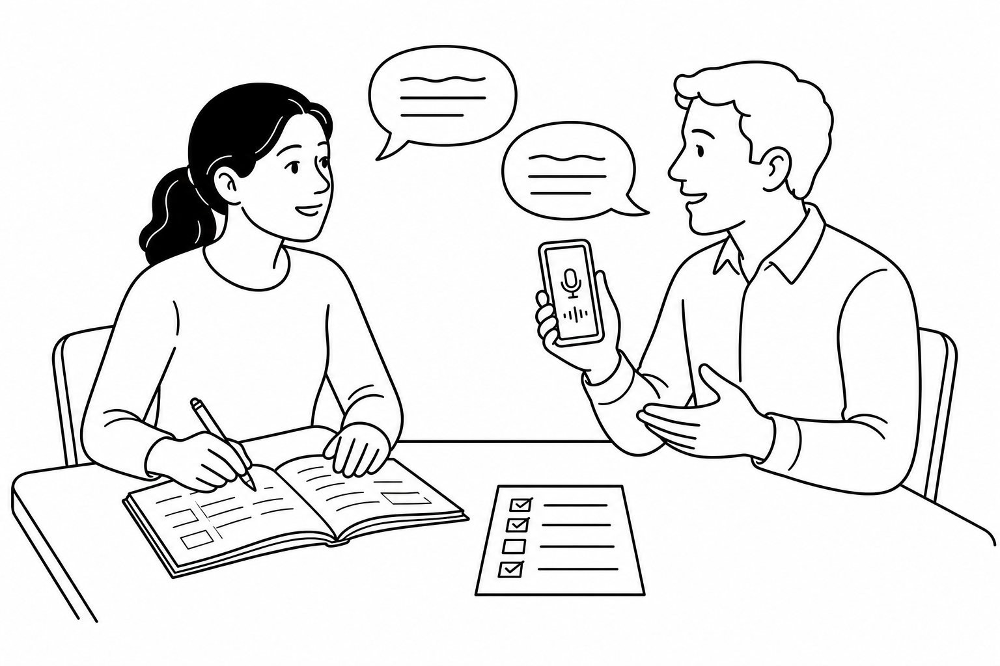

Practice, Use It, Bring It Back
Eight clearly separated practice sets—one for each B4 chapter. Complete the core exercises, use English in a short mission, and bring evidence of your homework to the next class.

- Core: complete Exercises 1 and 2 after class.
- Real Use: complete Exercise 3 aloud with a person, AI voice tool, or phone recorder.
- Bring Back: bring the requested evidence and be ready to use it with a partner.
- Stretch: revise and improve one answer after feedback.
| Chapter | Survival outcome | Homework evidence |
|---|---|---|
| 1 | Introduce yourself, your routine, and a recent event. | Six-sentence profile + 60-second recording |
| 2 | Explain and confirm an arrival plan. | Arrival card + confirmation recording |
| 3 | Report a lost item and what you have tried. | Lost-item report + follow-up answers |
| 4 | Pass on instructions accurately. | Three-message relay note |
| 5 | Explain a disruption in chronological order. | Three-event timeline + voice explanation |
| 6 | Report a service problem and request action. | Customer-service message |
| 7 | Describe the person, place, or thing you need. | Three clue cards |
| 8 | Complete a multi-stage day-abroad rehearsal. | Mission log + final reflection |
Assign only the core tasks when students have limited time. Begin the next class with a five-minute evidence exchange in pairs. Check whether the student attempted the mission; do not turn every homework task into another grammar test.
Starting Over: Routines and Recent Events
I can say what is usually true and what happened at a finished time.
Complete each sentence with the Present Simple or Simple Past form of the verb.
Write two facts about you, two routine sentences, and two sentences about a recent finished event. Underline the time expressions.
Use your profile without reading every sentence. Ask your partner one routine question and one past question. Use one repair phrase if needed.
Voice prompt: “Act as a new B4 classmate. Ask me one question at a time about my routine and one recent event. Speak slowly. If I make an important mistake, explain it briefly in Portuguese and ask me to repeat.” Offline: record both sides of a six-question conversation. Bring back: your six-sentence profile and one sentence you improved.
Use: Message clear / Tense understandable / Asked a follow-up / Used repair. Mark Attempted, Developing, or Ready.
Planning the Trip: Arrival, Help, and Instructions
I can explain a plan, ask what I have to do, and confirm time and place.
Circle the option that best completes each situation.
The train leaves ___ 7:40 ___ Monday.
a) at / onYou ___ show your passport at the desk. It is required.
b) mustI think I ___ take the airport bus. That is my plan.
a) will___ you tell me where platform 6 is?
a) CouldComplete the card in full sentences.
A partner changes one detail on your arrival card. Confirm the time, place, and action. Include: “So I need to…”, “Did you say…?”, or “Can you write that down?”
Voice prompt: “Act as an airport information worker. Ask about my arrival plan. Then give me a gate, a time, and one instruction. Make me confirm all three details. Speak slowly.” Offline: ask someone to read three details twice, then record your confirmation. Bring back: the arrival card and the final three-detail confirmation.
Prioritize accurate confirmation over complex future grammar. Ask two students to demonstrate contrasting clear and unclear confirmations.
Recent Problems: Lost Luggage and Travel Experience
I can state a current problem, say what I have tried, and give finished details.
Complete with the Present Perfect or Simple Past.
Invent a lost item. Include appearance, last known place/time, and two actions you have already taken.
Give your report aloud. Your partner asks: What does it look like? When did you last see it? What have you done? How can we contact you?
Voice prompt: “Act as a lost-property worker. I have lost an item. Ask one question at a time about its appearance, when and where I last saw it, what I have already done, and my contact details. Do not give me model answers until the end.” Offline: record your report, pause, and answer the four printed questions. Bring back: the written report plus one follow-up answer that was difficult.
Accept natural variation. Correct only errors that blur the difference between present result and finished past detail.
Passing On Information: What They Said
I can report what a worker said, told me, or asked me.
Complete each report with the most useful verb.
Report each message. Preserve the meaning; perfect mechanical tense changes are not the main goal.
“The shuttle leaves from the side entrance.”
The worker said that the shuttle left / leaves from the side entrance.“Show this receipt to the driver.”
The worker told me to show the receipt to the driver.“Please wait near the blue door.”
The worker asked me to wait near the blue door.Person A reads three instructions to Person B. Person B closes the page and reports them to Person C. Person C confirms one detail with: “Did they say…?”
Voice prompt: “Act as a hotel receptionist. Give me three short instructions, one at a time. Then change roles and ask me to report what the receptionist said, told me, and asked me to do.” Offline: ask someone to read three instructions while you take notes, then record your report. Bring back: the three original messages and your three reported versions.
Score information accuracy first. Do not penalize a student for keeping a present tense when the information is still true and meaning is clear.
Travel Disruptions: What Happened First
I can explain an earlier event, a later problem, and the help I need now.
Number the events 1–4.
Complete with the Past Perfect or Simple Past.
Draw a three-event timeline. Explain what had happened, what happened next, and what you need now. Ask for two possible solutions.
Voice prompt: “Act as a station worker. I missed a connection. Ask what had happened before I arrived, what happened next, and what help I need. Offer two options and make me choose one.” Offline: use a three-event timeline to record a 60-second explanation and request. Bring back: the timeline and your chosen solution.
One accurate Past Perfect clause is enough if the whole sequence is understandable. Avoid forcing it into every sentence.
Customer Service: What Was Lost, Canceled, or Declined
I can report what happened to an item, payment, booking, or order and request action.
Rewrite using the Passive Voice because the result is more important than the actor.
The airline canceled my flight.
My flight was canceled.The machine declined my card.
My card was declined.Someone damaged my suitcase.
My suitcase was damaged.The restaurant delivered the wrong order.
The wrong order was delivered.Use: was charged, was delivered, was declined, can be replaced.
Choose a card problem, booking problem, damaged item, or wrong order. Explain: what happened, what evidence you have, and what solution you want.
Voice prompt: “Act as a patient customer-service agent. Ask me what happened, when it happened, what evidence I have, and what solution I want. Offer a solution and a time frame. Make me confirm both.” Offline: use an imaginary receipt or booking and record both sides. Bring back: a four-sentence service message and the promised solution/time frame.
Reward a clear request and concrete resolution. The passive form supports the mission; it is not the mission itself.
Finding What You Need: People, Places, and Purpose
I can describe an unknown person, place, or object and explain its purpose.
Complete each clue.
Complete with for or to.
Describe three useful people, places, or objects without naming them. Include one who, one which, one where, and a purpose phrase.
Voice prompt: “Act as a city information volunteer. I will describe three people, places, or objects without naming them. Guess what I need, ask a follow-up question, and give a simple next step.” Offline: play the clue game with someone or record clues and reveal the answers after a pause. Bring back: your three clue cards and one follow-up question.
A successful clue matters more than choosing a technically perfect relative pronoun. Ask: Did the listener identify it?
A Day Abroad: Final Mission Rehearsal
I can combine everyday phrases, solve problems, and repair communication across several situations.
Write the correct letter.
Use: check in, fill it out, speak more slowly, mean, sort this out.
Complete all three stages with a partner: (1) ask for transport help and confirm the route; (2) check in and follow an instruction; (3) solve a wrong order, room, payment, or health problem. Use at least two repair phrases.
Voice prompt: “Create a three-stage B4 survival roleplay: transportation, check-in, and one unexpected service or health problem. Play one worker at a time. Speak slowly, ask follow-up questions, and do not give me the answer. At the end, tell me one strength and two priorities in Portuguese.” Offline: draw three situation cards and complete them with a partner or record both roles. Bring back: your four-line mission log and one goal for the final exam.
Complete the reflection honestly.
Use the formal speaking rubric categories informally: communication, understands/responds, target language, clarity, and repair. Give one strength and one next action.